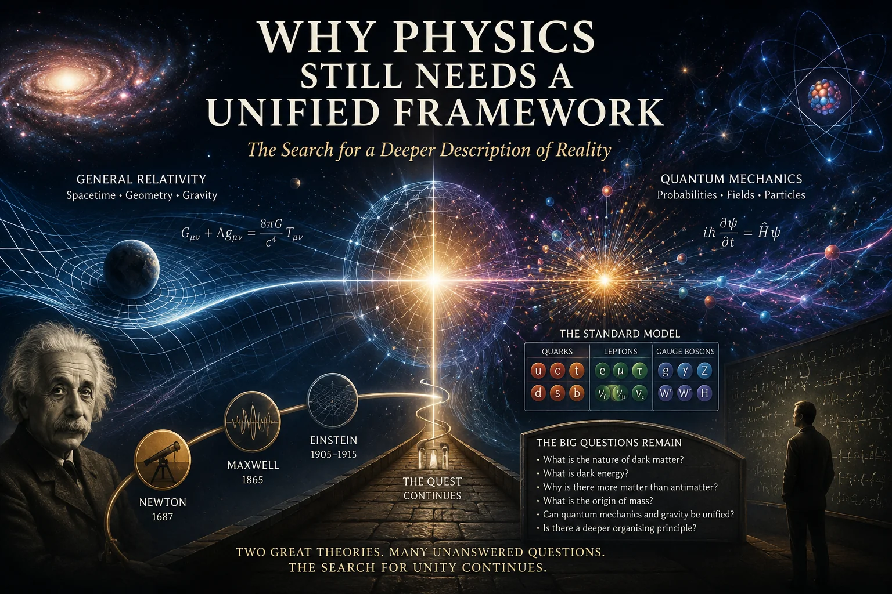
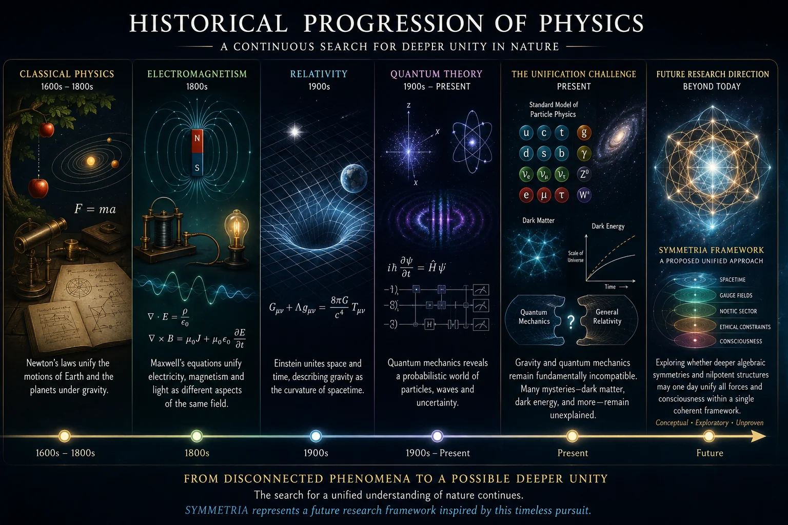
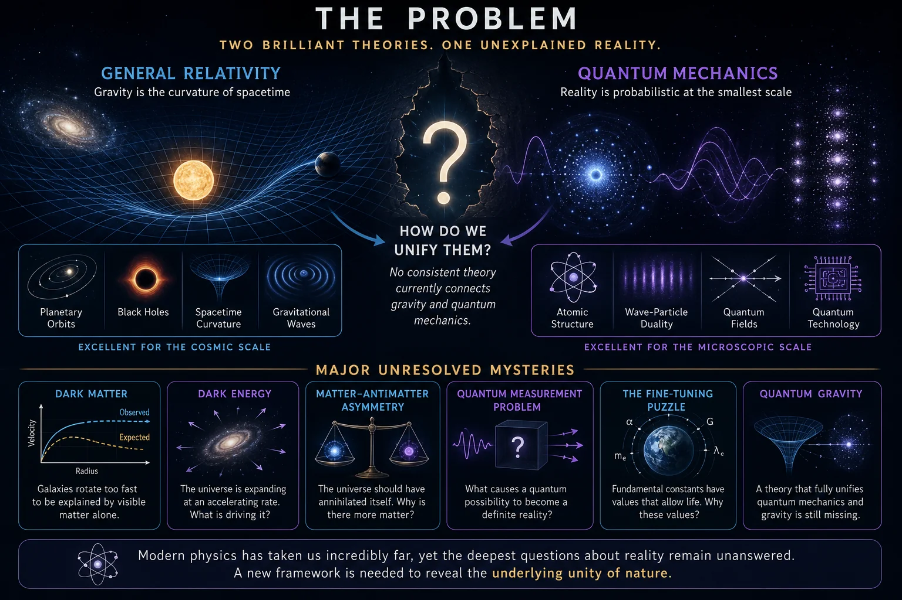
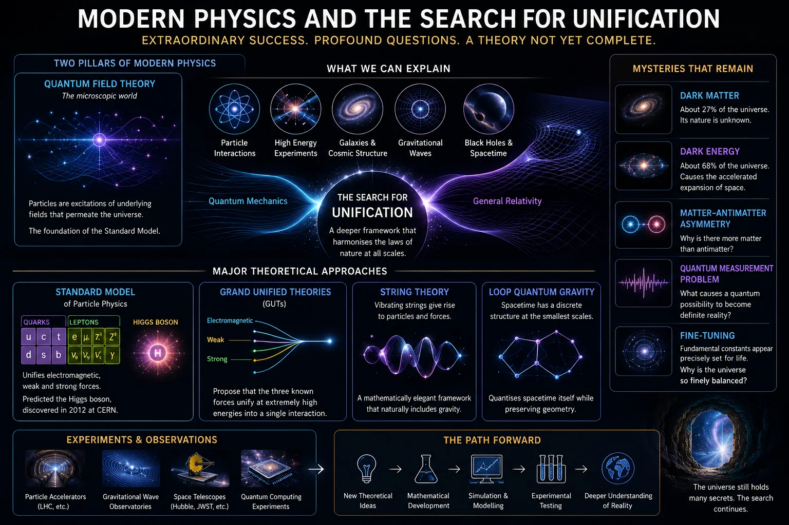
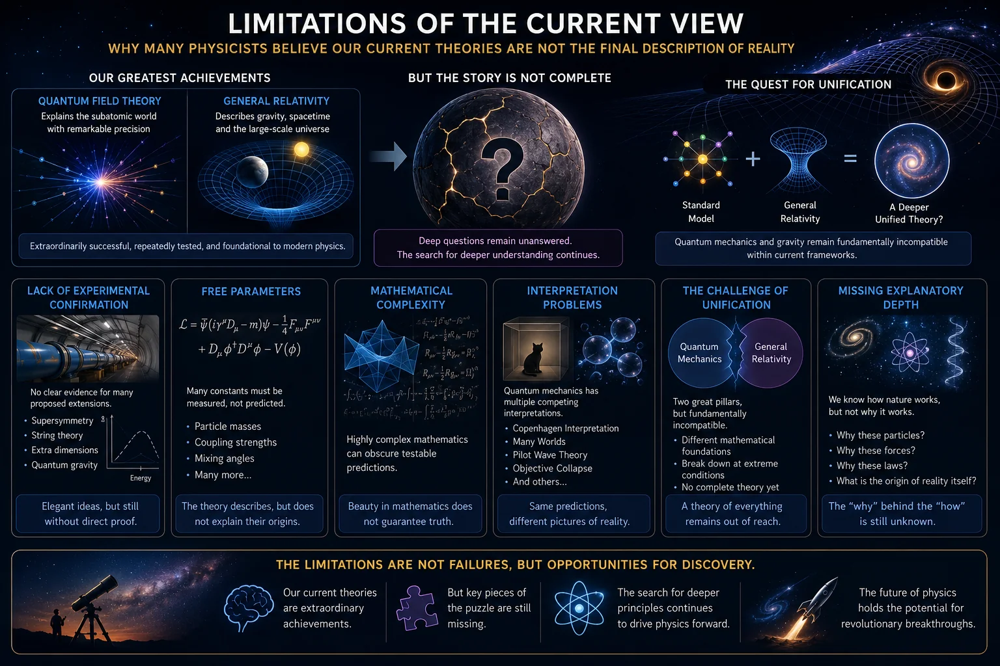
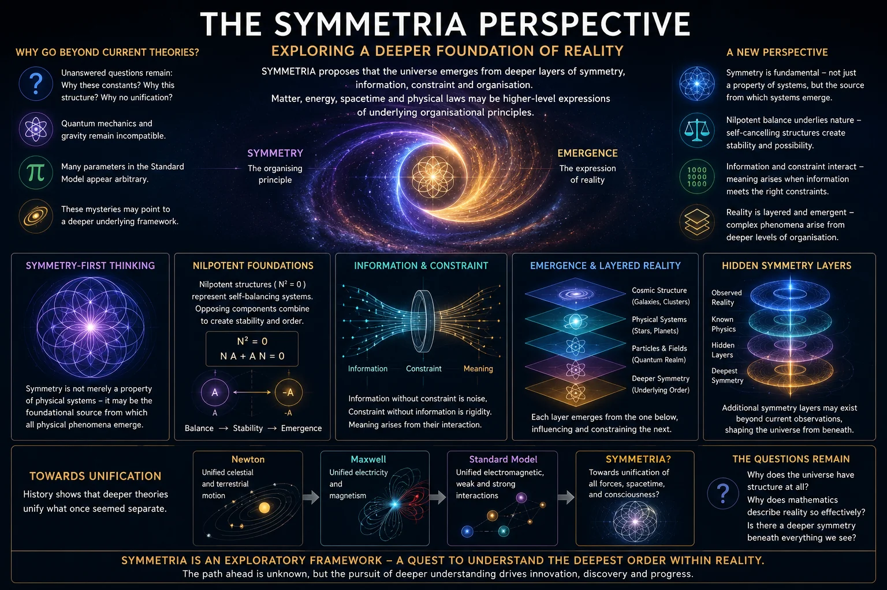
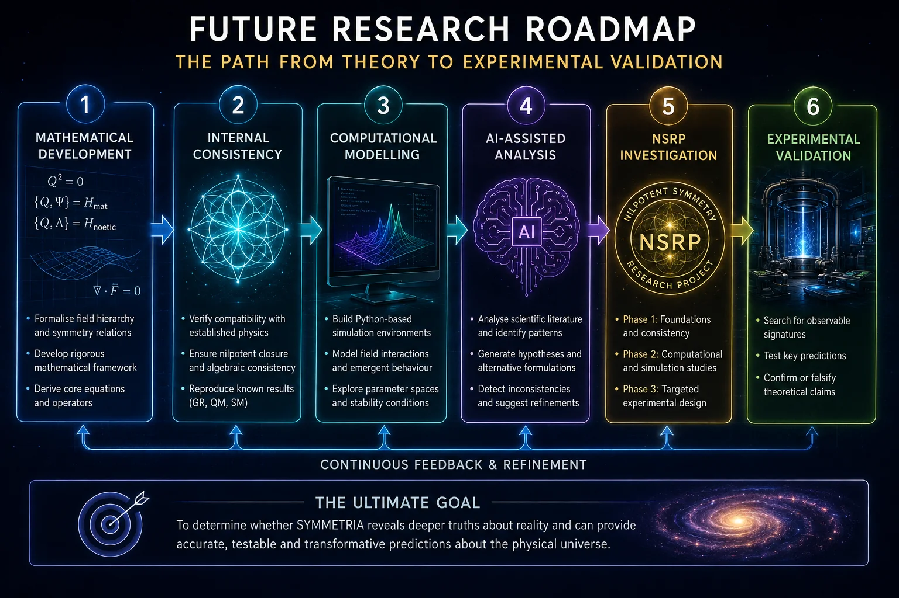

Why Physics Still Needs a Unified Framework
Part I of the SYMMETRIA Discussion Series
July 2026

Cover Illustration: Modern physics has achieved extraordinary success, yet several fundamental questions remain unresolved. The search for a deeper unified framework continues to drive theoretical research.
1. Introduction
The history of science can be viewed as a continuing search for simplicity beneath complexity. Time and again, seemingly unrelated phenomena have been shown to arise from deeper underlying principles. The motions of falling apples and orbiting planets were unified through Newton's theory of gravity. Electricity and magnetism were brought together through Maxwell's equations. Space and time themselves became aspects of a single spacetime framework through Einstein's theory of relativity.
These successes have encouraged generations of physicists to believe that nature may ultimately possess a deeper level of organisation than is immediately apparent. Rather than consisting of countless independent laws and disconnected phenomena, reality may emerge from a smaller set of fundamental principles operating beneath the surface of observable physics.
Modern physics has achieved extraordinary success in describing the natural world. The Standard Model of particle physics provides remarkably accurate predictions for the behaviour of fundamental particles and their interactions, whilst General Relativity remains our most successful description of gravity and the large-scale structure of the universe. Together, these theories form the foundation of contemporary physics and have been confirmed through countless experiments and observations.
Despite these achievements, significant questions remain unanswered. The Standard Model and General Relativity are built upon fundamentally different mathematical foundations and cannot currently be combined into a single self-consistent framework. Furthermore, several major mysteries continue to challenge our understanding, including the nature of dark matter, dark energy, quantum measurement, and the apparent fine-tuning of many physical constants.
For many physicists, these unresolved questions suggest that our current theories may represent only part of a larger picture. Just as Newtonian mechanics was eventually superseded by relativity and quantum theory, it is possible that today's models may themselves emerge from deeper organisational principles that remain undiscovered.
The purpose of this paper is not to argue that modern physics is fundamentally wrong. On the contrary, its achievements are among the greatest intellectual accomplishments in human history. Instead, the goal is to examine why the search for a deeper unified framework continues, what challenges currently stand in the way of unification, and why new approaches continue to be explored.
This discussion serves as the starting point for the SYMMETRIA Discussion Series. Before introducing the framework itself, it is important to understand the scientific landscape from which it emerged. Only by appreciating both the successes and limitations of modern physics can we properly evaluate whether alternative frameworks such as SYMMETRIA offer useful new perspectives for future investigation.

Figure 1.1: Throughout history, physics has repeatedly advanced through the discovery of deeper unifying principles. From Newton's laws of motion to Maxwell's electromagnetic theory and Einstein's relativity, each breakthrough has revealed previously hidden connections within nature.
2. The Problem
Modern physics is one of humanity's greatest intellectual achievements. Over the past century, scientists have developed theories capable of predicting the behaviour of matter, energy, space and time with extraordinary precision. The technologies that surround us every day-from computers and smartphones to satellites, lasers, MRI scanners and nuclear power stations-exist largely because of the success of modern physics.
Yet despite these achievements, physicists find themselves facing an uncomfortable reality: our best theories do not fully agree with one another, and many of the deepest questions about the universe remain unanswered.
The two pillars of modern physics are the Standard Model of particle physics and Einstein's theory of General Relativity. Individually, both have proven remarkably successful. Together, however, they present a picture of reality that appears incomplete.
The Standard Model describes the behaviour of elementary particles and three of the four known fundamental forces: electromagnetism, the strong nuclear force and the weak nuclear force. It has been tested repeatedly through experiments and has demonstrated an astonishing degree of accuracy. Predictions made decades ago have been confirmed to many decimal places, culminating in the discovery of the Higgs boson in 2012.
General Relativity, meanwhile, describes gravity as the curvature of spacetime itself. Rather than viewing gravity as a conventional force, Einstein showed that massive objects bend the geometry of the universe around them. This theory has successfully explained planetary motion, black holes, gravitational lensing and, more recently, gravitational waves.
The problem is that these two theories appear fundamentally incompatible.
Quantum mechanics governs the microscopic world of particles and probabilities, while General Relativity governs the large-scale structure of the cosmos. Each works exceptionally well within its own domain, but when physicists attempt to combine them-particularly under extreme conditions such as the centres of black holes or the first moments after the Big Bang-the mathematics begins to break down.
This incompatibility is widely regarded as one of the greatest unsolved problems in science. If both theories are correct, then there must be a deeper framework capable of explaining why they work so well while also reconciling their differences.
The search for such a framework has motivated generations of physicists and remains one of the primary goals of theoretical physics today.
Beyond the challenge of unification, several major mysteries continue to puzzle researchers.
One of the most significant is dark matter. Observations of galaxies reveal that stars orbit far too quickly to be held together by visible matter alone. Something unseen appears to be exerting additional gravitational influence. Astronomers estimate that ordinary matter accounts for only about five percent of the universe's total energy content, while dark matter contributes roughly twenty-seven percent. Despite decades of searching, no one knows what dark matter actually is.
An even greater mystery is dark energy. In 1998, astronomers discovered that the expansion of the universe is accelerating rather than slowing down. This unexpected result suggests the existence of a mysterious form of energy permeating space itself. Dark energy is thought to comprise nearly seventy percent of the universe, yet its nature remains entirely unknown.
Together, dark matter and dark energy imply that the vast majority of the universe consists of something that modern physics cannot currently explain.
Another unresolved puzzle concerns matter-antimatter asymmetry. According to current theories, the Big Bang should have produced equal amounts of matter and antimatter. When matter and antimatter meet, they annihilate one another, releasing energy. If equal quantities had been created, the universe should contain little more than radiation.
Clearly this did not happen.
Somehow, a slight imbalance emerged in favour of matter. This tiny asymmetry allowed stars, planets, galaxies and ultimately life itself to exist. The origin of this imbalance remains unknown.
Quantum mechanics itself also presents profound conceptual challenges. The theory predicts experimental outcomes with extraordinary accuracy, yet physicists continue to debate what the mathematics actually means.
The famous measurement problem asks a deceptively simple question: what causes a quantum possibility to become a definite reality?
Different interpretations offer radically different answers. Some propose that wave functions collapse during measurement. Others suggest that all possible outcomes occur in parallel universes. Still others argue that the quantum state merely represents information rather than physical reality.
Despite nearly a century of debate, no consensus has emerged.
A related mystery concerns the apparent fine-tuning of the universe. Many fundamental constants appear to possess values that lie within extremely narrow ranges compatible with the existence of stars, chemistry and life. Small changes to these values could produce a radically different cosmos.
Whether this fine-tuning reflects deeper physical principles, chance, selection effects or something else entirely remains an open question.
Taken together, these challenges reveal a striking contrast. Modern physics is both enormously successful and profoundly incomplete. It can predict the behaviour of particles with extraordinary precision and describe the evolution of galaxies across billions of years. Yet it still cannot explain the nature of most of the universe, reconcile its two foundational theories or fully account for the existence of reality as we observe it.
These unresolved problems have inspired numerous attempts at unification, from string theory and loop quantum gravity to various alternative frameworks and emerging approaches. While none has yet achieved universal acceptance, the search continues.
It is within this broader context that new theoretical frameworks such as SYMMETRIA seek to contribute. Whether successful or not, they are part of a long scientific tradition: the effort to discover a deeper and more coherent understanding of the universe than currently exists.

Figure 2.1: Modern physics is built upon two highly successful but fundamentally incompatible frameworks: quantum mechanics and General Relativity.
3. Current Physics Explanation
Modern physics is one of humanity's greatest intellectual achievements. Over the past century, it has transformed our understanding of reality, revealing a universe governed by mathematical laws that operate across scales ranging from subatomic particles to entire galaxies. Through a combination of theoretical insight and experimental verification, physicists have developed remarkably successful models capable of explaining an enormous range of natural phenomena.
Today, two major pillars form the foundation of modern physics: Quantum Field Theory (QFT) and General Relativity (GR). Together, these frameworks have allowed scientists to explain the behaviour of matter, energy, forces, space and time with extraordinary precision.
Quantum Field Theory provides the mathematical framework that underpins modern particle physics. Rather than viewing particles as tiny isolated objects, QFT describes them as excitations of underlying quantum fields that permeate the universe. Electrons arise from electron fields, photons emerge from electromagnetic fields, and other particles correspond to their own associated quantum fields. This approach has proven extremely successful and forms the basis of the Standard Model of Particle Physics.
The Standard Model is currently the most accurate scientific description of the fundamental particles and forces known to exist. It explains the electromagnetic force, the weak nuclear force and the strong nuclear force within a unified mathematical framework. The model successfully predicts the behaviour of quarks, leptons, gauge bosons and numerous composite particles observed in experiments.
One of the greatest triumphs of the Standard Model was the prediction and eventual discovery of the Higgs boson in 2012. The Higgs field provides a mechanism through which many fundamental particles acquire mass, and its experimental confirmation represented a major milestone in modern physics. The Standard Model has been tested repeatedly through particle accelerator experiments and continues to match observations with remarkable accuracy.
Alongside particle physics sits Einstein's theory of General Relativity. Published in 1915, General Relativity revolutionised our understanding of gravity. Rather than treating gravity as a force acting across space, Einstein described it as the curvature of spacetime itself. Massive objects distort the geometry of spacetime, and other objects move along paths determined by that curvature.
General Relativity has successfully explained phenomena including planetary orbits, black holes, gravitational lensing and the expansion of the universe. More recently, the direct detection of gravitational waves provided another spectacular confirmation of Einstein's predictions. These tiny ripples in spacetime, produced by events such as merging black holes, were first detected in 2015 and opened an entirely new window onto the cosmos.
Modern cosmology builds upon General Relativity to describe the large-scale structure and evolution of the universe. The currently accepted cosmological model suggests that the universe began approximately 13.8 billion years ago in a hot, dense state commonly known as the Big Bang. Observations indicate that the universe has been expanding ever since, leading to the formation of galaxies, stars and planets.
Despite these successes, physicists recognise that our current understanding remains incomplete. Several major questions remain unanswered.
One significant challenge involves the relationship between Quantum Field Theory and General Relativity. Each theory works exceptionally well within its own domain, yet they are mathematically difficult to reconcile. Quantum mechanics governs the microscopic world, whilst General Relativity governs the behaviour of gravity and spacetime on larger scales. Developing a theory that successfully combines both remains one of the central goals of theoretical physics.
This challenge has motivated the search for a Grand Unified Theory (GUT). Grand Unified Theories attempt to merge the electromagnetic, weak and strong nuclear forces into a single mathematical framework. Various models have been proposed, suggesting that these forces may represent different manifestations of a deeper unified interaction at extremely high energies. Although several promising ideas exist, no Grand Unified Theory has yet been experimentally confirmed.
Beyond GUTs lies the even more ambitious goal of a Theory of Everything - a framework capable of incorporating gravity alongside the other known forces. Numerous approaches have been developed in pursuit of this objective.
One of the best-known candidates is String Theory. Rather than treating elementary particles as point-like objects, String Theory proposes that they arise from tiny vibrating strings. Different vibrational patterns correspond to different particles and forces. The theory offers a mathematically elegant route towards unification and naturally includes gravity within its framework. Over several decades, it has generated a vast amount of mathematical research and remains one of the most extensively studied approaches to quantum gravity.
Another major approach is Loop Quantum Gravity (LQG). Rather than introducing fundamental strings, LQG attempts to quantise spacetime itself. In this picture, space may possess a discrete structure at extremely small scales. The theory seeks to preserve the geometric insights of General Relativity whilst incorporating quantum principles. Although conceptually different from String Theory, it shares the same ultimate goal of understanding gravity within a quantum framework.
In addition to theoretical work, modern physics continues to rely heavily upon experimental investigation. Facilities such as particle accelerators, gravitational-wave observatories, space telescopes and quantum computing platforms provide increasingly precise data with which to test theoretical predictions. Researchers continue searching for evidence of new particles, dark matter candidates, quantum gravitational effects and possible deviations from existing theories.
Several mysteries continue to drive current research. Dark matter appears to account for a substantial portion of the universe's mass, yet its nature remains unknown. Dark energy seems responsible for the accelerating expansion of the universe, but its origin remains one of cosmology's greatest puzzles. Questions surrounding quantum measurement, spacetime structure and the ultimate foundations of physical law also remain active areas of investigation.
Taken together, modern physics represents an extraordinary scientific achievement. Quantum Field Theory, the Standard Model and General Relativity have transformed our understanding of nature and provided an exceptionally successful description of observed reality. At the same time, unresolved questions surrounding unification, gravity, dark matter and dark energy demonstrate that the story is not yet complete. These open problems continue to motivate the search for deeper theoretical frameworks capable of extending our understanding beyond the current frontier of physics.

Figure 3.1: Modern physics seeks to explain nature through a combination of quantum field theories, particle physics and gravitational models, whilst continuing the search for a deeper unified framework.
4. Limitations of the Current View
Modern physics is one of humanity's greatest intellectual achievements. The Standard Model of particle physics and Einstein's theory of General Relativity have transformed our understanding of reality, allowing scientists to predict experimental outcomes with extraordinary precision and explain phenomena ranging from subatomic interactions to the evolution of galaxies. Together, these theories form the foundation of contemporary physics and have been validated through countless experiments and observations.
Yet despite their remarkable success, most physicists do not believe that our current theories represent the final description of reality. Instead, they are generally viewed as extraordinarily effective approximations that work within specific domains whilst leaving a number of fundamental questions unanswered. The search for a deeper framework is therefore not driven by dissatisfaction with existing theories, but rather by recognition of their known limitations.
One of the most significant challenges concerns the lack of experimental confirmation for many proposed extensions to current theories. Over the past several decades, physicists have developed numerous candidate frameworks that attempt to move beyond the Standard Model. These include supersymmetry, string theory, loop quantum gravity, extra-dimensional models, and various approaches to quantum gravity.
Whilst many of these frameworks are mathematically sophisticated and conceptually appealing, direct experimental evidence supporting them remains elusive. Large-scale experiments, including those conducted at the Large Hadron Collider (LHC), have confirmed many predictions of the Standard Model but have yet to provide clear evidence for most proposed extensions. This has led some researchers to question whether the next major breakthrough will emerge from existing theoretical approaches or require fundamentally new ideas.
Another commonly discussed limitation involves the large number of free parameters within the Standard Model itself. The theory successfully describes particle interactions, but it does not explain why many of its numerical constants possess the values that they do.
For example, the masses of elementary particles, the strengths of the fundamental forces, and various mixing angles must be determined experimentally and then inserted into the theory. The Standard Model predicts how these quantities behave once known, but it does not explain their origins.
Many physicists view this as a sign that a deeper level of description may exist beneath the current framework. Historically, scientific progress has often involved reducing apparently arbitrary quantities to more fundamental principles. Whether this pattern will continue remains unknown, but the presence of numerous unexplained constants suggests that important pieces of the puzzle may still be missing.
Mathematical complexity also presents a significant challenge. Modern theoretical physics increasingly relies on highly sophisticated mathematics. In some cases, proposed unification theories require mathematical structures so complex that deriving experimentally testable predictions becomes difficult.
This creates an important tension. Mathematics is one of the most powerful tools available to physicists, but elegant mathematics alone does not guarantee physical correctness. Throughout history, many mathematically beautiful theories have ultimately failed because they did not accurately describe nature.
As a result, physicists must continually balance mathematical elegance against empirical verification. A successful theory must not only be internally consistent but also make predictions that can be tested through observation or experiment.
Interpretation problems represent another area of ongoing debate. Quantum mechanics remains one of the most successful scientific theories ever developed, yet disagreement continues regarding what its mathematical formalism actually means.
Different interpretations-including the Copenhagen Interpretation, Many Worlds Interpretation, Pilot Wave Theory, Objective Collapse models, and others-often produce identical experimental predictions whilst offering radically different pictures of reality.
This situation is unusual within science. Normally, competing theories can be distinguished through experiment. In quantum foundations, however, multiple interpretations may explain the same observations equally well. As a result, important philosophical and conceptual questions remain unresolved, including the nature of measurement, observation, probability, and reality itself.
The challenge of unification presents perhaps the most famous limitation of current physics. The Standard Model successfully describes three of the four known fundamental forces: electromagnetism, the strong nuclear force, and the weak nuclear force. General Relativity, meanwhile, provides our best description of gravity.
Unfortunately, these two frameworks are built upon fundamentally different mathematical foundations and become incompatible under certain extreme conditions, such as those thought to exist inside black holes or during the earliest moments of the universe.
For decades, physicists have sought a unified framework capable of incorporating both quantum mechanics and gravity into a single coherent theory. Despite considerable effort, a universally accepted solution has yet to emerge.
Finally, many researchers argue that current theories sometimes describe how nature behaves without fully explaining why it behaves that way. The Standard Model provides extraordinarily accurate calculations, but deeper questions remain concerning the origins of particles, forces, spacetime, and physical law itself.
These unresolved issues should not be viewed as failures of modern physics. On the contrary, they highlight how successful current theories have been whilst simultaneously revealing where future discoveries may lie. The history of science repeatedly demonstrates that periods of great success often expose new mysteries rather than eliminate them.
For this reason, many physicists continue searching for deeper principles, more unified frameworks, and new experimental evidence that may eventually expand our understanding of reality. Whether future breakthroughs emerge from existing approaches or entirely new directions remains uncertain, but the existence of these limitations ensures that the quest for deeper understanding remains very much alive.

Figure 4.1: Modern physics has achieved extraordinary success, yet unresolved questions concerning unification, interpretation, fundamental constants, and experimental verification suggest that current theories may not represent the final description of reality.
5. The SYMMETRIA Perspective
Modern physics has achieved extraordinary success in describing the behaviour of the universe. Quantum mechanics explains the behaviour of atoms and particles with remarkable accuracy. General relativity provides an elegant description of gravity and the large-scale structure of spacetime. The Standard Model of particle physics successfully predicts the behaviour of fundamental particles and three of the four known forces.
Yet despite these achievements, many fundamental questions remain unanswered.
Why do the constants of nature have the values they do? Why does the universe appear so finely structured? Why do quantum mechanics and gravity remain difficult to unify? Why does the Standard Model contain so many seemingly arbitrary parameters? Are spacetime, matter and energy truly fundamental, or are they emergent manifestations of something deeper?
SYMMETRIA begins with the assumption that these unresolved questions may point towards a deeper organisational framework beneath currently accepted physical theories.
Importantly, SYMMETRIA is not presented as an established scientific theory. It remains an exploratory framework intended to investigate alternative ways of thinking about unification, emergence and the structure of reality. Rather than beginning with particles, forces or spacetime itself, the framework starts with symmetry and organisation.
5.1 Symmetry-First Thinking
Symmetry already occupies a central position within modern physics.
Conservation laws emerge from symmetries. Particle interactions are governed by symmetry groups. Gauge theories derive much of their power from underlying symmetrical structures.
SYMMETRIA extends this principle further.
Instead of viewing symmetry as merely a property of physical systems, it explores the possibility that symmetry may be a foundational organising principle from which physical systems themselves emerge.
Under this perspective, matter, energy, forces and spacetime are not necessarily primary ingredients of reality. They may instead represent stable expressions of deeper symmetry relationships operating beneath observable phenomena.
This approach shifts the focus from asking:
"What are the fundamental building blocks?"
to asking:
"What organisational principles give rise to the appearance of building blocks?"
Such a shift may seem subtle, but it leads to a very different way of approaching unification.
5.2 Nilpotent Foundations
One of the key inspirations behind SYMMETRIA comes from the study of nilpotent mathematical structures.
A nilpotent structure is self-balancing. Opposing components combine in such a way that the total system remains constrained and internally consistent.
In the SYMMETRIA framework, nilpotency is viewed not simply as a mathematical curiosity but as a possible clue regarding how nature organises itself.
The universe repeatedly exhibits balancing behaviour:
- Positive and negative charge
- Matter and antimatter
- Action and reaction
- Expansion and gravitational attraction
- Order and disorder
These balancing relationships appear throughout physics at many different scales.
SYMMETRIA explores whether such balancing behaviour reflects deeper nilpotent organisational principles operating beneath observable reality.
Rather than treating physical phenomena as independent objects interacting externally, the framework investigates whether they may emerge from internally balanced algebraic structures that naturally generate stable physical behaviour.
5.3 Information and Constraint
A second major theme within SYMMETRIA is the relationship between information and constraint.
Modern science increasingly recognises the importance of information in physical systems.
Information appears in thermodynamics, quantum mechanics, computing, biology and cosmology. Some researchers have even suggested that information may be more fundamental than matter itself.
SYMMETRIA adopts a similar line of investigation but emphasises the role of constraint.
Information without constraint becomes noise.
Constraint without information becomes rigidity.
Complex structures emerge when information and constraint interact in balanced ways.
A useful analogy is music.
A piano contains eighty-eight keys and can produce an enormous number of possible note combinations. Without any rules or structure, random notes produce little meaning. Musical beauty emerges because information is organised through constraint.
SYMMETRIA explores whether physical reality may operate according to similar principles.
Particles, forces and spacetime may not simply exist independently. They may emerge from deeper informational structures constrained by underlying symmetry relationships.
Under this interpretation, the observable universe becomes less like a machine and more like a highly organised informational system.
5.4 Emergence and Layered Reality
Another important concept within SYMMETRIA is emergence.
Emergence occurs when complex behaviour arises from simpler underlying processes.
Examples appear throughout nature:
- Consciousness emerges from neural activity.
- Weather emerges from molecular interactions.
- Life emerges from chemistry.
- Galaxies emerge from gravitational dynamics.
The Framework proposes that many apparently fundamental physical properties may themselves be emergent.
Mass, charge, force interactions and even spacetime geometry could potentially arise from deeper organisational layers operating beneath current physical descriptions.
This idea does not reject existing theories.
Instead, it views them as highly successful descriptions of emergent behaviour.
Just as chemistry remains valid even though it emerges from particle physics, quantum mechanics and relativity may remain correct while still emerging from deeper structures.
In this sense, SYMMETRIA seeks not to replace modern physics but to investigate what may lie beneath it.
5.5 Organised Structure
A recurring theme throughout the framework is the idea that nature exhibits extraordinary organisational efficiency.
From atomic structure to biological systems, the universe repeatedly demonstrates hierarchical organisation.
Small structures combine to form larger structures.
Simple rules generate complex behaviour.
Patterns repeat across multiple scales.
SYMMETRIA explores whether this organisational tendency reflects an underlying architectural principle embedded within reality itself.
Under this view, the universe is not simply a collection of independent objects but an interconnected hierarchy of relationships.
Each layer influences and constrains the layers above and below it.
This perspective naturally encourages systems thinking and interdisciplinary investigation, since seemingly unrelated phenomena may ultimately share common organisational foundations.
5.6 Unified Field Concepts
The long-term goal of the SYMMETRIA programme is to investigate whether a deeper unified framework can be constructed that links currently separate areas of physics.
Historically, successful theories have tended to unify previously disconnected phenomena.
Newton unified celestial and terrestrial motion.
Maxwell unified electricity and magnetism.
The Standard Model unified electromagnetic, weak and strong interactions within a common framework.
SYMMETRIA asks whether a further stage of unification may still remain undiscovered.
Rather than beginning with force equations, however, the framework begins with symmetry, emergence, information and constraint.
The hypothesis is that observable fields may ultimately emerge from deeper organisational structures.
Whether this idea proves scientifically useful remains unknown, but it provides a conceptual direction for future investigation.
5.7 Hidden Symmetry Layers
Perhaps the most speculative aspect of SYMMETRIA concerns the possibility that additional symmetry layers may exist beyond those currently recognised within mainstream physics.
Nature often reveals hidden levels of organisation only when observational tools become sufficiently sophisticated.
Atoms were once invisible.
Genes were once unknown.
Quantum fields were once unimaginable.
The Framework therefore explores whether additional layers of symmetry may exist that are not directly observable under ordinary conditions.
Such layers, if they exist, could potentially influence the emergence of spacetime, particle behaviour or cosmological structure.
At present there is no experimental evidence confirming such layers.
They remain conceptual possibilities rather than established scientific facts.
Nevertheless, exploring such possibilities forms part of the broader goal of understanding whether deeper organisational principles may underlie the physical universe.
Conclusion
The SYMMETRIA perspective represents an attempt to look beyond the traditional boundaries of modern physics and explore whether deeper organisational principles may exist beneath the phenomena we observe.
It places symmetry, balance, information, constraint and emergence at the centre of its worldview. Rather than treating matter, energy and spacetime as necessarily fundamental, it investigates whether these familiar concepts might arise from deeper layers of structure and organisation.
Whether these ideas ultimately prove correct remains uncertain. The Framework is still in an early exploratory stage and many of its concepts may require substantial revision or may ultimately prove incorrect.
Even so, the questions it asks are among the deepest in science:
Why does the universe possess structure at all?
Why does mathematics describe reality so effectively?
And might there exist a deeper symmetry beneath everything we currently observe?

Figure 5.1: SYMMETRIA proposes that reality may emerge from deeper layers of symmetry, information, constraint and organisation. Matter, energy, spacetime and physical laws may represent higher-level expressions of underlying organisational principles operating beneath observable reality.
6. Predictions and Future Research
One of the most important questions facing any proposed unified framework is not whether it appears elegant or internally consistent, but whether it can be tested. Throughout the history of science, many attractive theoretical ideas have ultimately failed because they could not produce unique predictions or withstand experimental scrutiny. For SYMMETRIA to develop beyond a conceptual framework, it must therefore be subjected to rigorous mathematical analysis, computational modelling, and eventually experimental investigation.
At its core, SYMMETRIA proposes that physical reality may emerge from interactions between multiple underlying field layers rather than from a collection of entirely separate forces and particles. If this view contains elements of truth, it should eventually produce observable consequences that differ from the predictions of existing theories. The challenge is identifying where those differences might appear and how they can be measured.
A key requirement is internal consistency. Before any experimental work can begin, the framework must demonstrate that its mathematical structure remains self-consistent across multiple domains. It must reproduce established results from quantum mechanics, special relativity, general relativity, and the Standard Model wherever those theories have already been experimentally confirmed. Any successful unified framework must explain existing observations at least as effectively as current theories before it can claim to extend beyond them.
Mathematical development therefore represents the first major phase of future research. The field hierarchy proposed by SYMMETRIA must be expressed in a rigorous formal language capable of generating quantitative predictions. Relationships between the various field layers, symmetry operations, and constraint mechanisms must be defined clearly enough to allow independent verification. This process is likely to require substantial collaboration between physicists, mathematicians, and computational researchers.
Computational validation forms the next stage of investigation. Modern scientific research increasingly relies upon large-scale simulation and modelling environments. Once formal mathematical relationships have been established, computer-based simulations can be used to explore the behaviour of the framework under a wide range of conditions. These simulations may reveal hidden instabilities, unexpected emergent behaviours, or novel predictions that would otherwise remain difficult to identify through analytical methods alone.
Python-based modelling provides an accessible starting point for this work. Numerical simulations can be used to test field interactions, investigate symmetry-breaking processes, and explore how complex structures might emerge from simpler underlying rules. Such computational experiments offer a relatively low-cost method of examining the consequences of the framework before any physical experiments are attempted.
Large Language Models (LLMs) may also play an important role in future development. While AI systems cannot determine whether a theory is correct, they can assist researchers by analysing large bodies of scientific literature, identifying mathematical patterns, generating alternative formulations, and highlighting potential inconsistencies. In this sense, AI becomes a research assistant rather than a replacement for scientific judgement. As these systems continue to improve, they may accelerate the process of theoretical exploration and hypothesis generation.
The long-term goal of this effort is the Nilpotent Symmetry Research Program (NSRP). The NSRP has been conceived as a structured, multi-stage research programme designed to investigate the foundations and implications of the SYMMETRIA framework. Its purpose is not to prove the theory correct, but to determine whether the framework possesses sufficient mathematical coherence and predictive power to justify further investigation.
The project is expected to begin with foundational consistency studies, followed by computational modelling and simulation work. If promising results emerge, later phases may examine possible experimental signatures. These could include subtle deviations from Standard Model predictions, unusual quantum behaviours, or previously unrecognised relationships between physical constants. At present, such possibilities remain speculative, but they provide a direction for future inquiry.
An important prediction of the scientific process itself is that many ideas will likely be revised or discarded. This should not be viewed as failure. Scientific progress occurs through continual refinement, correction, and improvement. If parts of SYMMETRIA prove incorrect, identifying those weaknesses will still contribute valuable knowledge. Conversely, if certain aspects survive rigorous scrutiny, they may offer new insights into the deeper structure of physical reality.
Ultimately, the future of SYMMETRIA will depend not on philosophical appeal, but on evidence. The Framework must earn credibility through mathematics, simulation, prediction, and experimental validation. Whether it evolves into a significant scientific advance or simply serves as an interesting intellectual exercise remains unknown. The purpose of future research is to answer that question through disciplined investigation rather than assumption.
Table 6.1 - Research Methodology and Development Tools
| Research Area | Near-Term Goal | Long-Term Objective |
|---|---|---|
| Mathematical Development | Formalise field equations and symmetry relationships | Produce quantitative predictions |
| Internal Consistency | Verify compatibility with established physics | Establish a coherent unified framework |
| Python-Based Modelling | Simulate field interactions and emergent behaviour | Identify testable predictions |
| Computational Validation | Explore parameter spaces and stability | Refine or reject theoretical assumptions |
| Large Language Models | Assist literature review and hypothesis generation | Accelerate interdisciplinary research |
Figure 6.1 - Future Research Roadmap

Figure 6.1: The future development of SYMMETRIA is expected to proceed through a series of increasingly rigorous stages, beginning with mathematical formalisation and internal consistency checks, followed by computational modelling, AI-assisted analysis, and structured investigation through the Nilpotent Symmetry Research Program (NSRP). Ultimately, the framework must be evaluated through testable predictions and experimental validation to determine its scientific viability.